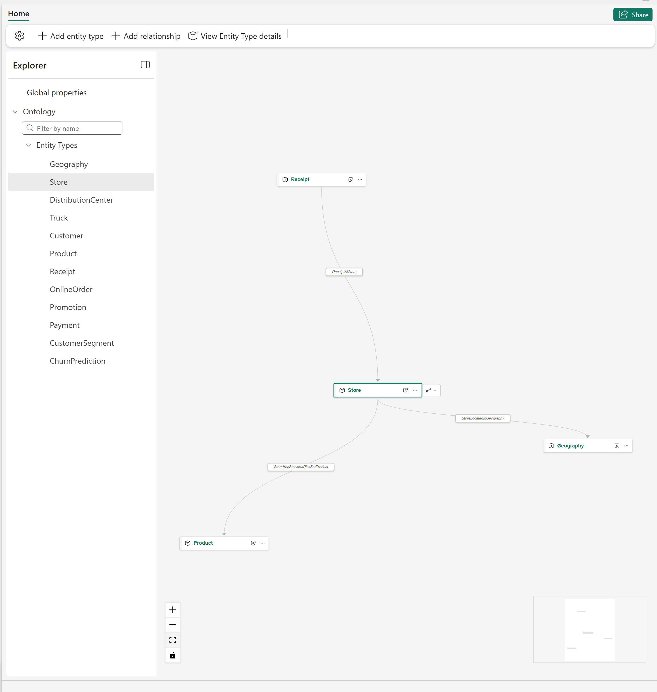
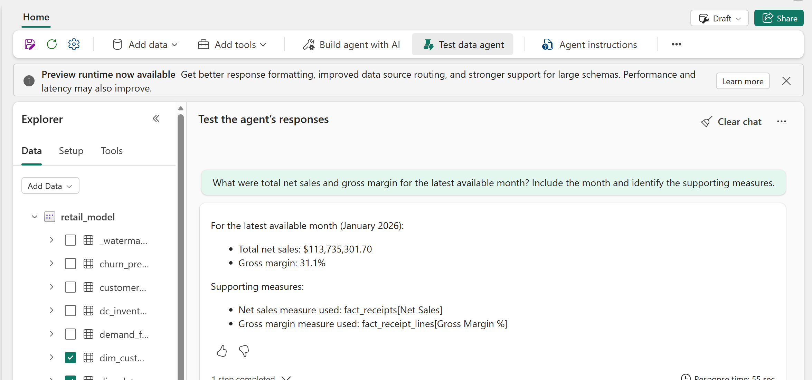
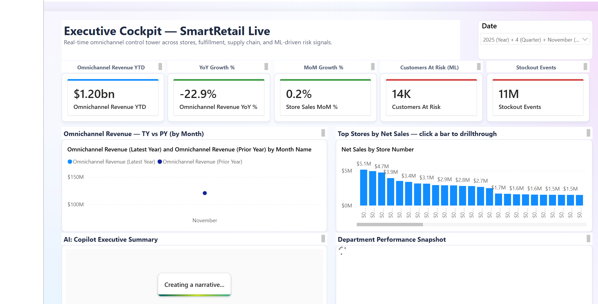
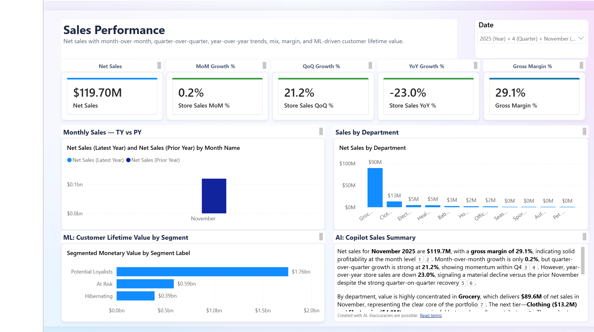
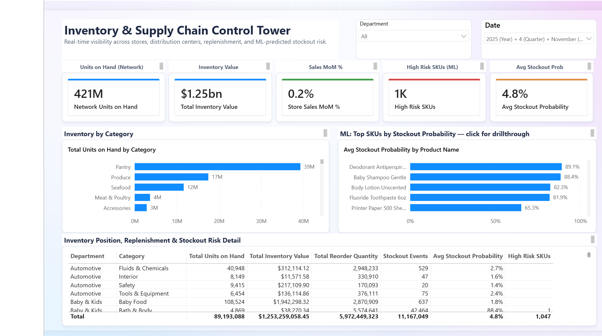
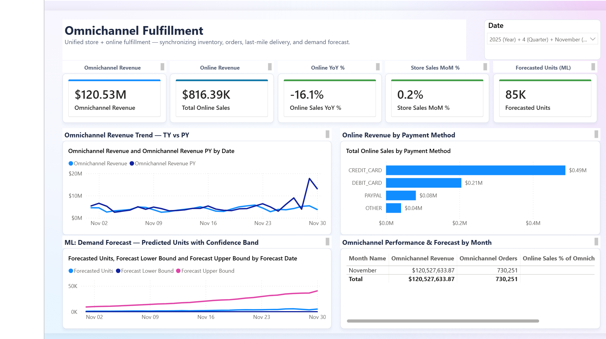
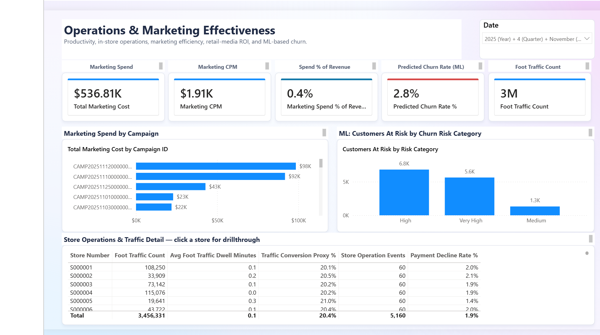

Deployed walkthrough: analytics and AI¶
- Audience: Retail, analytics, and business stakeholders
- Duration: 10-15 minutes
- Data: Synthetic
Use this page after the deployed walkthrough overview to show business context, grounded agent answers, and the Power BI outcome.
Optional surfaces
Ontology and data-agent experiences require valid source bindings, permissions, and capability support. Skip a surface that has not passed its preflight checks.
1. Show business context in the ontology¶
An ontology is a business map that connects concepts such as Store, Product, Customer, and Receipt to the underlying data. Show this section only after deployment confirmed that the ontology exists and points to the intended Lakehouse and Eventhouse sources.
- Open the Ontologies folder.
- Open Retail Ontology.
- Select the
Storeentity type. - Use Fit view to show its connected entities.

The selected Store entity connects operational data to Receipt, Geography, and Product business concepts.
Explain that the ontology adds shared business meaning over existing Lakehouse and Eventhouse data. It does not replace the physical schema or create a second copy of the source data.
2. Test a grounded data-agent answer¶
If the semantic-model agent passed its source and permission checks:
- Open the Agents folder.
- Open
retail-semantic-model-agent. - Select Test data agent.
- Ask for the latest available month, total net sales, gross margin, and the supporting measures.

The data agent returns the selected period, values, and supporting semantic model measures so the answer can be checked against the report.
The agent's latest available month can differ from the report's current date filter. The agent queries the current semantic model, while deployment saves the report's date filter to the month containing the configured history end date. State both periods before comparing values. If they differ, use the period written in the agent response and change the report filter to the same month before quoting a comparison. Treat every generated answer as a hypothesis to verify against measures, query output, and source timestamps.
Skip an agent when it has no selected data sources, returns an error, or has not passed its capability and access checks. The ontology graph can still be shown independently when its bindings are valid.
3. Close with the Power BI outcome¶
- Open the Reporting folder.
- Open the
retail_modelreport. - Start on Executive Cockpit.
- Continue to Sales, Supply Chain Control Tower, Omnichannel Fulfillment, or Operations & Marketing when the audience wants more detail.

The Executive Cockpit combines omnichannel performance, store comparisons, ML risk signals, and an AI-generated narrative over the Direct Lake semantic model.
Direct Lake is the Power BI connection mode that reads Lakehouse tables directly without importing another data copy. The report opens on the latest month generated by this deployment, not a hard-coded month shared by every workspace.
State the selected data period before discussing a value. All values are synthetic, and an AI-generated narrative can contain inaccuracies. Use the underlying measures and source timestamps as evidence.
Report page gallery¶

Sales Performance combines revenue, growth, margin, department mix, and customer-lifetime-value signals.

The control tower combines inventory position, replenishment, and ML-predicted stockout risk.

Omnichannel Fulfillment combines store and online revenue with payment mix and demand forecasting.

Operations and Marketing combines campaign spend, churn risk, foot traffic, store operations, and payment-decline context.
Connect from VS Code (MCP)¶
Both the Data Agent and the Ontology expose streamable-HTTP MCP servers, so you
can talk to them directly from VS Code's agent-mode chat (Copilot) to experiment with
questions before wiring them into the agentic application.
Each call is a single JSON-RPC POST authenticated with a Fabric bearer token.
The endpoint URLs follow these shapes (substitute your workspace, data-agent, and ontology-item GUIDs):
# Data Agent (semantic model)
https://api.fabric.microsoft.com/v1/mcp/workspaces/{workspaceId}/dataagents/{dataAgentId}/agent
# Ontology (business graph)
https://api.fabric.microsoft.com/v1/mcp/dataPlane/workspaces/{workspaceId}/items/{ontologyItemId}/ontologyEndpoint
1. Sign in to the tenant that owns the workspace:
2. Mint a Fabric token (valid ~60–75 min — copy the output):
3. Add .vscode/mcp.json (the .vscode/ folder is gitignored). VS Code prompts
for the token once per session and passes it in the Authorization header:
{
"inputs": [
{
"type": "promptString",
"id": "fabric-token",
"description": "Fabric bearer token (az account get-access-token --resource https://api.fabric.microsoft.com --query accessToken -o tsv)",
"password": true
}
],
"servers": {
"retail-data-agent": {
"type": "http",
"url": "https://api.fabric.microsoft.com/v1/mcp/workspaces/{workspaceId}/dataagents/{dataAgentId}/agent",
"headers": { "Authorization": "Bearer ${input:fabric-token}" }
},
"retail-ontology": {
"type": "http",
"url": "https://api.fabric.microsoft.com/v1/mcp/dataPlane/workspaces/{workspaceId}/items/{ontologyItemId}/ontologyEndpoint",
"headers": { "Authorization": "Bearer ${input:fabric-token}" }
}
}
}
4. Start the servers — click the Start code-lens above each server in
.vscode/mcp.json (or run MCP: List Servers from the Command Palette), paste the
token, then open Copilot Chat in Agent mode and confirm both tools are enabled.
The Data Agent advertises one tool (DataAgent_<name>); the Ontology advertises
list_ontology_entity_types and search_ontology. When calls start returning 401,
the token has expired — re-mint it (step 2) and MCP: List Servers → Restart.
Which one to ask
The Data Agent is best at aggregates, rankings, and trends ("top 10 products by revenue last quarter"). The Ontology is best at single named-entity 360 lookups ("what segment is loyalty member LC012304678 in, and their churn probability?") and tends to error on deep multi-hop scans.
Analytics and AI validation¶
| Interaction | Expected result |
|---|---|
Select the ontology Store entity |
Related business entities and relationship names appear in the graph. |
| Ask the semantic-model agent for latest sales | The answer includes a data period and supporting measures that can be independently checked. |
| Open Executive Cockpit | Report visuals load for the selected data period without model or binding errors. |
Return to the walkthrough overview or use a focused presenter journey.